After the coordinate system is transferred into the local coordinate, it is convenient to determine first the intersection of the ray with the z = 0 plane.
At first, s0 is calculated by using:
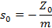
Then, the intersection point with the Z = 0 plane could be calculated as:
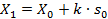
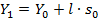
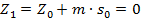
Thus, the parameter p of the distance along the ray measured from (X0, Y0, Z0) is now replaced by s0 and sf .

sf is measured from the point (X1, Y1, 0) to the intersection point on the surface.
When the surface is a plane, s0 = 0; thus p= s0 .
But when the surface is not a plane and the routine of the surface is expressed as:
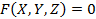
Spherical surface:
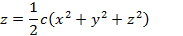
And if we try to solve the equation of the surface to get the coordinate z given as a function of c, x, and y. The solution would be:
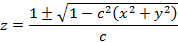
And we find that the solution that we need is as follows and only the negative sign is taken into consideration:
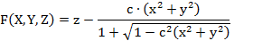
Therefore let the coordinates of P be (X, Y, Z) and the length of the segment from (X1, Y1, 0) to (X, Y, Z) is  , we have
, we have
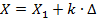

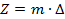
P lies on the surface, and therefore the equations could be put in the form
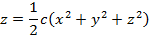
And we obtain a quadratic equation for  as:
as:
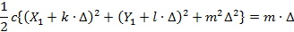
Or
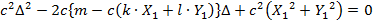
Thus, the solution of the quadratic is:
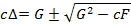
In which
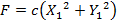
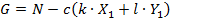
Considering the special case that the ray goes through the vertex of the surface, we can see that the negative sign is taken into consideration just like the solution we need of the general surface equation. Also in general 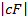 is much less than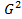. The result is
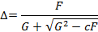
No loss of significant figures when the form is used numerically.
In this form, the value of can be substituted to give 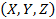, the intersection point of the incidence; this completes the transfer process.
Conic section:
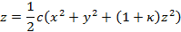
And similar with the solution of the spherical surface, the conic surface that we need only takes the negative sign into consideration:
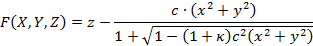
The result will be:
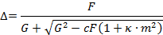
Created with the Personal Edition of HelpNDoc: Free EBook and documentation generator